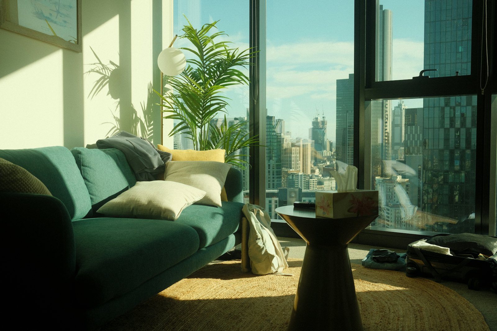
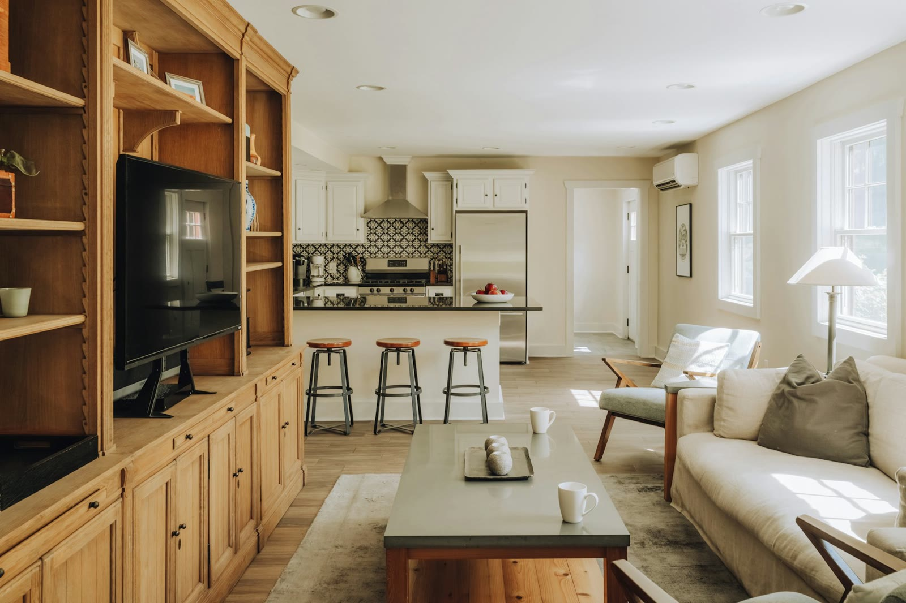
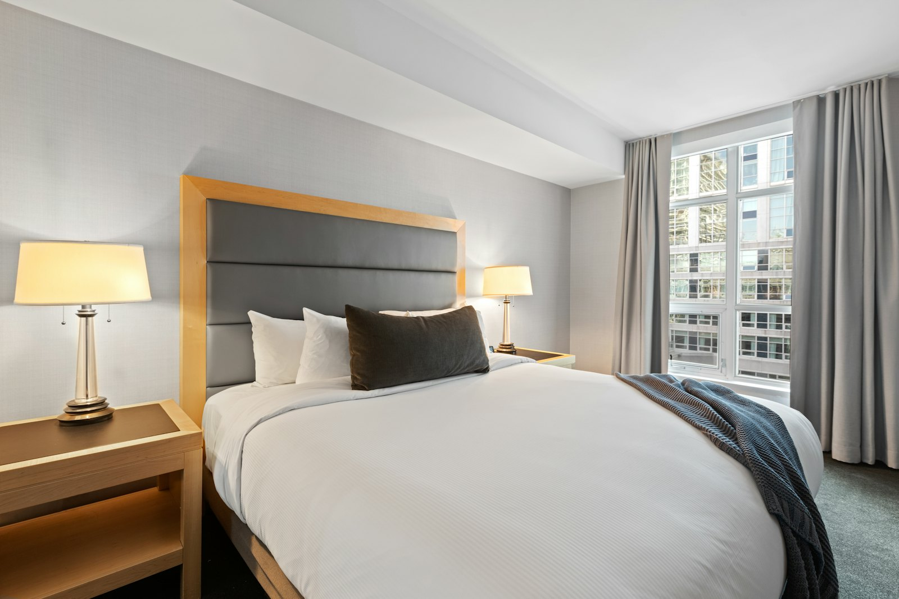
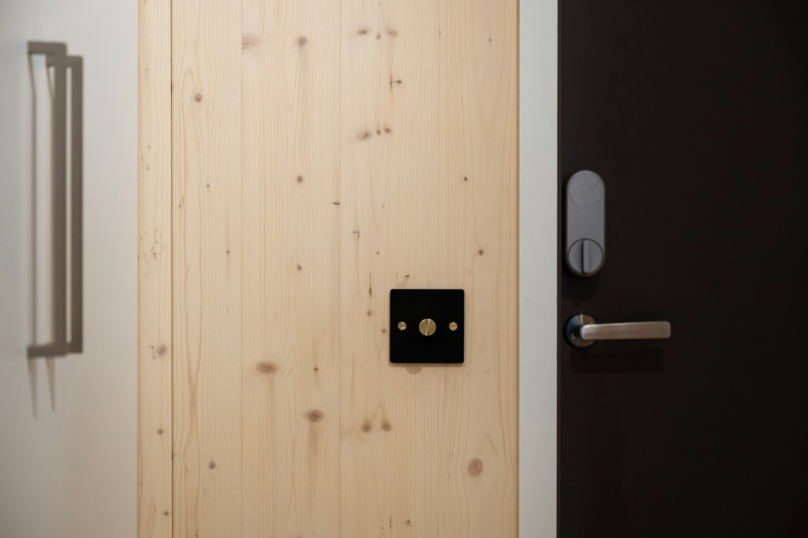
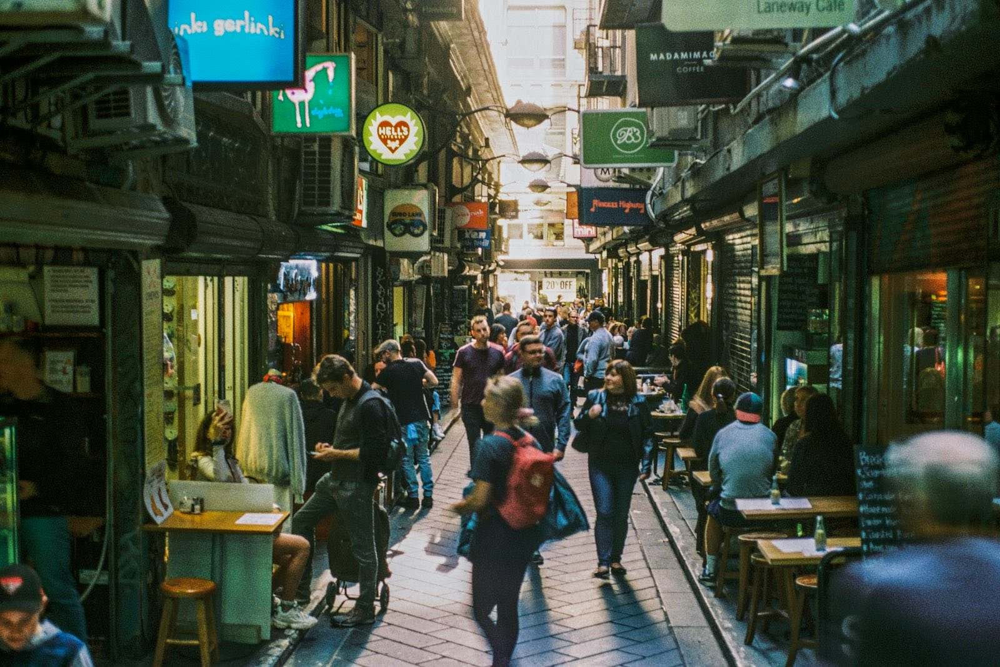

Photo credits.
Every photo on this site is a free photo from Unsplash, used under the Unsplash License. They show Melbourne, Brisbane and the feel we aim for. None of them is a Rosevari home.
-

A high-rise living room with a green sofa in late sunPhoto by sophie peng on Unsplash. Taken in Melbourne. -
 A sunlit living room with a sofa and armchairPhoto by Danilo Rios on Unsplash.
A sunlit living room with a sofa and armchairPhoto by Danilo Rios on Unsplash. -

A bright open-plan living room and kitchenPhoto by Clay Banks on Unsplash. -
 Late sun on a living-room wall with plantsPhoto by Ashe Walker on Unsplash.
Late sun on a living-room wall with plantsPhoto by Ashe Walker on Unsplash. -

A made-up bedroom with bedside lamps and a city windowPhoto by Point3D Commercial Imaging Ltd. on Unsplash. -
 A white bed with fresh towels folded at the footPhoto by Andrew Neel on Unsplash.
A white bed with fresh towels folded at the footPhoto by Andrew Neel on Unsplash. -
 A bright white kitchen with an open living area behindPhoto by Point3D Commercial Imaging Ltd. on Unsplash.
A bright white kitchen with an open living area behindPhoto by Point3D Commercial Imaging Ltd. on Unsplash. -
 An open-plan kitchen with a long white islandPhoto by Gerda Kauks on Unsplash.
An open-plan kitchen with a long white islandPhoto by Gerda Kauks on Unsplash. -
 A bright bathroom with a freestanding bath and towelsPhoto by Steven Ungermann on Unsplash. Taken in Brisbane.
A bright bathroom with a freestanding bath and towelsPhoto by Steven Ungermann on Unsplash. Taken in Brisbane. -

A door with a keypad smart lockPhoto by Alex Tyson on Unsplash. -
 A hand holding house keys at an open doorPhoto by Jakub Żerdzicki on Unsplash.
A hand holding house keys at an open doorPhoto by Jakub Żerdzicki on Unsplash. -
 A tram passing Flinders Street StationPhoto by Nguyen Minh on Unsplash. Taken in Melbourne.
A tram passing Flinders Street StationPhoto by Nguyen Minh on Unsplash. Taken in Melbourne. -

A busy café lanewayPhoto by Thomas Pavitte on Unsplash. Taken in Melbourne. -
 Old houses and a jacaranda on a Melbourne streetPhoto by Maria Dumin on Unsplash. Taken in Melbourne.
Old houses and a jacaranda on a Melbourne streetPhoto by Maria Dumin on Unsplash. Taken in Melbourne. -
 Story Bridge and the city over the riverPhoto by Queensland, Australia on Unsplash. Taken in Brisbane.
Story Bridge and the city over the riverPhoto by Queensland, Australia on Unsplash. Taken in Brisbane. -
 The city skyline across the river at duskPhoto by Josh Withers on Unsplash. Taken in Brisbane.
The city skyline across the river at duskPhoto by Josh Withers on Unsplash. Taken in Brisbane. -
 A street lined with jacarandas at sunsetPhoto by Samantha Gilmore on Unsplash. Taken in Brisbane.
A street lined with jacarandas at sunsetPhoto by Samantha Gilmore on Unsplash. Taken in Brisbane.